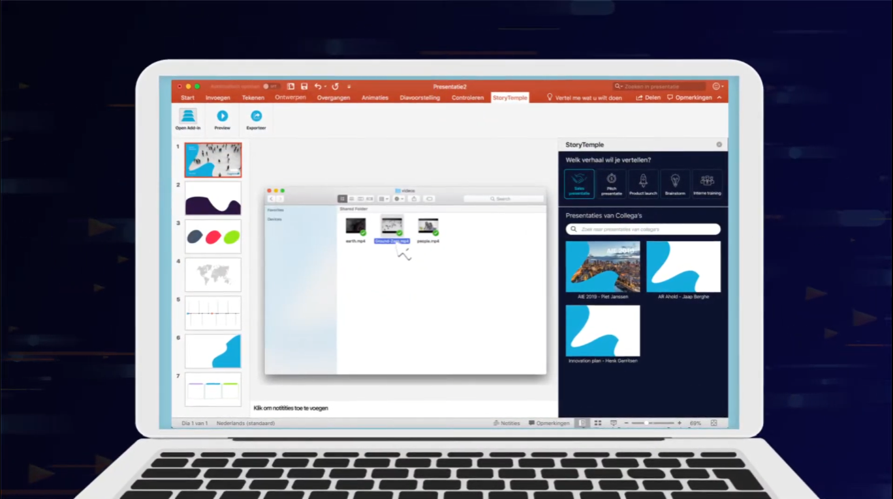
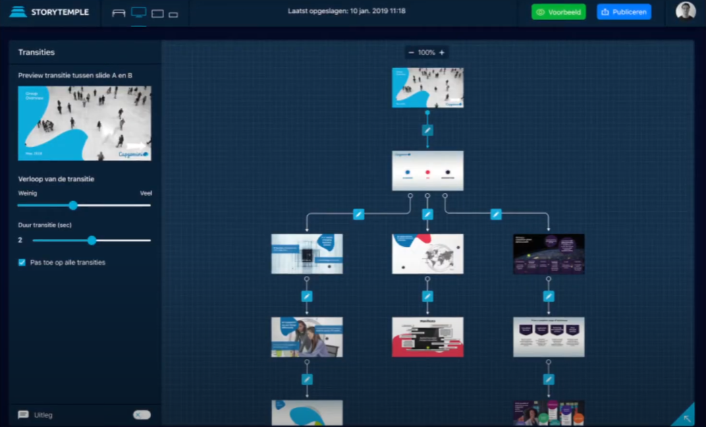

StoryTempleStage
SVG Animatie Onderzoek

Opdracht:
Onderzoek welke mogelijkheden er zijn voor modulaire SVG animaties.
Focus:
JS libraries, SVG, UX
Proces:
Op basis van eerder onderzoek op zoek gegaan naar verschillende JS libraries die toepasselijk zijn voor de applicatie van StoryTemple. Hierbij was het belangrijk dat de animaties modulair zijn, en dus met behulp van sliders etc. aangepast konden worden door gebruikers. Dit onderzoek heb ik verwerkt in een document dat door mijn opvolger bij StoryTemple gebruikt zal worden.
Link naar Project
 Reflectie
Bij WT-Interactive/StoryTemple heb ik moeten werken met professionals op het gebied van code en UX design. Ik heb veel kunnen leren van deze mensen en kan met trots zeggen dat ik als tweedejaars student toch aardig kon meekomen. Aan het begin van mijn stage moest ik op stoom komen i.v.m. het delen van mijn werk, maar hier heb ik ook stappen gezet. Ik merk dat ik nog beter moet worden in het leesbaar maken van mijn code, wanneer deze in teamverband gebruikt zal worden.